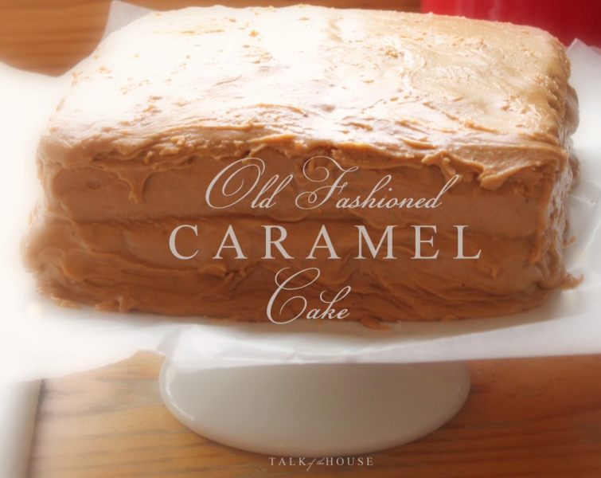
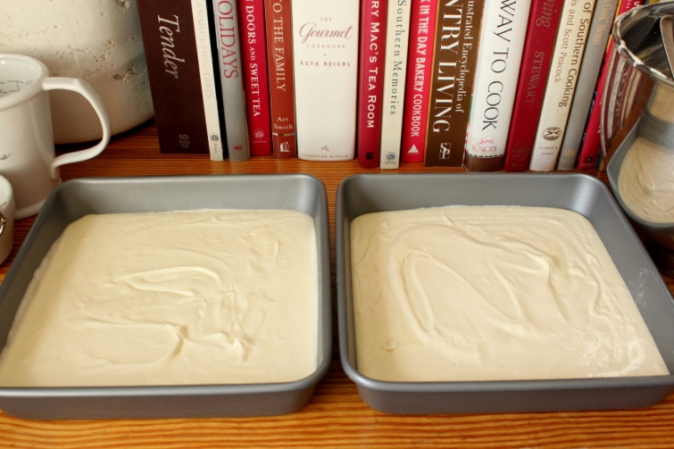

.png)
.PNG)
.PNG)
.PNG)
.PNG)
.PNG)
.JPG)
.JPG)
.PNG)
.PNG)


Baking is a science – chemistry to be exact. Growing up, math was always my favorite subject in school. I could play with numbers all day long. Math was easy. But if you gave me an assignment in chemistry, I would dread it like the plague (and moan and groan and ask for help!) I was at the top of the math class, but Lord knows I had to be among the bottom of the chemistry students.
And just like there are top and bottom students in chemistry, in every small town people can fall into different achievement levels of bakers. There are the cake ladies…those who are at the top of the class. They are the women whose cakes you can always count on to be delicious and beautiful. In my town my friend Robin is a cake lady. So are my husband’s Aunt Wanda, our niece Whitney, Mrs. Hawk, Mrs. Evelyn Cawthon, and the nearby Mennonite ladies. I am sure all of these ladies approach baking with self-confidence.
But not me. Being in the bottom of the chemistry class, I approach cake baking with a Ghostbusters’ mentality of Who ya gonna call? For our wedding cake three decades ago, I called on Mrs. Cawthon, and for many years after that, I called on her for our children’s birthday cakes. She was THE cake lady in our little town before she retired. She and her business partner, Mrs. Nelle Shelton, made many cakes and other goodies for soooo many parties and weddings around here.
 When my husband asked for a caramel cake for his birthday, I shook in fear. I knew I couldn’t call on the retired Mrs. Cawthon for help, but I could call on her business partner Mrs. Shelton…not in person per se, but in the form of her cookbook, Treasures from Home. There on page 186, I found the cake recipe I needed…a nice basic 1-2-3-4 cake.
When my husband asked for a caramel cake for his birthday, I shook in fear. I knew I couldn’t call on the retired Mrs. Cawthon for help, but I could call on her business partner Mrs. Shelton…not in person per se, but in the form of her cookbook, Treasures from Home. There on page 186, I found the cake recipe I needed…a nice basic 1-2-3-4 cake.
I followed that recipe exactly, and the cake turned out well with good flavor and the perfect amount of flakiness. (Hallelujah!) But the cake is not the hardest part. It is that darn icing. Good grief it is finicky! Sometimes it won’t firm up making it unable to stick to the sides, or it can get so thick you can’t spread it. You can cook the sugar too much, and it tastes really really burnt. (It is supposed to be burnt sugar…but not so much that it tastes bad.) You can undercook it, and it tastes like butterscotch…which is NOT what I want in a caramel icing. I want the flavor of pralines. Butterscotch is definitely not caramel.
Somewhere I read that caramel icing can sense your fear when making it. Well I had plenty of fear when I started this! On page 191 of Mrs. Shelton’s cookbook, I found the sacred old Southern recipe.
I knew from previous experience that one batch would not frost more than a one layer cake, so I doubled the recipe. Ingredients and materials were assembled. I only had a large cast iron skillet, so I had to substitute a small non-stick pan for it. The thermometer is an absolute must.
While the milk and sugar were coming to a boil in the large pot, I began to burn the sugar in the small pan. This is where panic set in. The recipe never says whether you are to stir this pan or not, so I just did it occasionally. It got VERY dark brown, and even started foaming and smoking. I just knew I had cooked it too much.
But I continued to follow the recipe. At this point you need to stir the big pot of boiling sugar and milk, pour in the small pan of burnt sugar, AND hold the thermometer in the middle of the pan for the most accurate temperature. I tried to make this icing when I was a teenager and burned my hand severely at this point when it splashed on me (and that sugar doesn’t come off quickly!) Cookbook author Nathalie Dupree even recommends wrapping your hand in a dish towel to prevent this from happening. So how was I supposed to do those three things all at the same time?? I yelled for my husband to come help of course! 🙂 He held the thermometer, and I stirred. I had cold water ready in the sink, so when the mixture reached that magic temperature of 232 degrees, I moved the pot over to the water and began to beat it with my hand mixer.
Mrs. Shelton beats hers with a wooden spoon, but I felt the mixer would be better for me. The whole time I was beating it, I was muttering, I know I burnt it too much. I know I burnt it too much. But I was wrong. It turned out perfect!! 🙂 (I’m so sorry I forgot to take another photo of it undecorated with the waxed paper removed from the sides.)
It tasted just like the ones I remember getting from Mrs. Cawthon for our children’s birthday parties….a light caramel (not butterscotch!) flavor.
Now, I need to tell you that there are two main camps on how to make that icing. One side says to use evaporated milk and burn just a small amount of sugar (which is what I did.) The other side says to use whipping cream, burn a larger quantity of sugar, and make a sugar + water syrup before adding it to the boiling sugar + milk mixture. This is how my mother-in-law makes it, and it yields a darker richer icing. So the next time I make this cake, I will be trying out that version. (I am sure there are many variations of the icing, but these are just the two I most commonly see.)
Whether you are your town’s cake lady or not, I hope you will try out the caramel cake recipe one day soon – no matter which version of the icing you decide to tackle. And please let us know if you do! We would love to know how it turns out.
Until next time…


.PNG)
This cake looks amazing! I totally get what you mean about cooking and chemistry… I’m more a kind of “freestyle cook” 😉 so I need to be very disciplined when I begin a pastry recipe!
———————————————————————
It tasted amazing too. 🙂 I agree with you. Pastries do require more precision than other kinds of recipes. (But I think it is perfectly fine to be a freestyle cook. LOL)
Kelly
This cake looks and sounds yummy! 🙂 I’ll definitely try making it. I don’t really think of myself as a particularly good baker but I seem to be lucky with cakes …and pastry and they usually turn out well. You’ve made me realise that I haven’t made a cake in ages … baking results in eating …every last crumb 🙂 and as I’m trying hard with “healthy eating” at the moment …sure you know what I mean!
Daughter makes delicious lemon drizzle and coffee and walnut cakes …my favourite! So I’m usually guaranteed one on my birthday and Mother’s Day! 🙂
Hope you’re having a fun weekend ..we’ve had some very cold but bright and sunny days here …perfect for walking.
Rosemary
————————————————————————–
If you can do pastry, then you ARE a baker Rosemary! I hope you will give the caramel cake a try soon…even if you are trying to eat healthy. 🙂 You can just walk more in your lovely weather to burn off the calories from it! The lemon drizzle sounds delicious since I love anything with lemon. 🙂
Kelly
Oh, my, you were right, Kelly! I shouldn’t have looked! The caramel cake looks wonderfully delicious…and, that icing!!! I think making this cake is a labor of love. I am glad it turned out as you wanted it to. (I am handling torture very well! LOL)
——————————————————————–
Oh girl! You were NOT supposed to see that recipe. The icing alone would send you into a coma!! (Just like Father Tim in the Mitford books.) Baking that cake was definitely a labor of love. I am proud that you are handling the torture so well. (I would not be able to do that. 🙁 )
Kelly
I have never heard of a Carmel Cake, so wondering if this is a southern thing. It looks delicious! I hear you on the intimidating icing making. My Grandmother always made us angel food cakes with a special sticky icing growing up. As a treat for my sisters this summer I took the leap. I am not a cake baker, but it was edible and my little sisters were delighted. If there is none left, you were a hit!
———————————————————————
I think those of us in the South claim that cake as ours, but I don’t know for sure. LOL It was delicious! So glad you were able to try your grandmother’s special cake. Isn’t it funny how foods can be etched in our memories? 🙂
Kelly
Kelly,
This cake looks yummy! I must try it. Your wonderful photos and the description have given me courage.
DiAnne
———————————————————————–
Thank you DiAnne. I had hoped the photos would be of help when making this. I would love to see some of the steps in making that icing… or better yet, a video of someone making it!
Definitely give it a try. 🙂
Kelly
Kelly, you are brave to attempt that frosting. I would have assumed I’d burnt it from the colour on the spoon and tossed it!!! The cake looks delicious and I hope to make it but think the frosting is out of my league!
———————————————————————
Tricia I wasn’t brave. I was scared!! LOL It’s not out of your league. If I can make it, I know you can too. 🙂
Kelly
No one would call me a cake lady, but YES I’m going to try this. It looks so good I can taste it. Good thing hubby is retired and home to lend the third hand, but then again, he is the reason you had to make the cake in the first place so he doesn’t get the “good helper” award after all ;-0
———————————————————————-
Too funny! So glad you are going to give the recipes a try. It really was a delicious cake!
Kelly
I’ve read and looked at this several times– loved the pictures and the cake was beautiful! But lo, I’m too “chicken” to try!! The frosting sounds scary! And it seems here in FL the humidity can cause havock to frosting, pie dough and homemade candy. My husband’s favorite cake ( banana coconut) has a 7 minute frosting and sometimes it works out and sometimes not!! I have had to “do over” many times! Back in Ky we had a blackberry cake w/ caramel icing and the first time my SIL made it she used whole cloves ( didn’t know about ground cloves!) it was so pretty and she was so proud– but so upset when everyone had to spit out the whole cloves. 🙂
———————————————————————-
That frosting was quite intimidating to me, but if I can do it, you can too. And yes, I know all too well how humidity can kill a cooking project – like divinity! I believe that 7 minute frosting is a very close cousin to divinity. That is terrible about your SIL’s cake! Baking is too much work to have it turn out badly! I can so understand her getting upset.
Enjoy your weekend and do some baking. 🙂
Kelly
Kelly,
I love your story telling abilities! I bet your students loved when you read to them or told them stories. I am not a math person at all but I am usually a very good baker. This recipe sounds like the perfect challenge for my ability level. I think I will wait until this Summer when I have time to slow down a bit to try these two recipes. We have lots of Summer birthdays in our family. Thanks for sharing and I will keep you posted on how the recipes turn out! Take care.
Dawn
———————————————————————–
Goodness, thank you Dawn! What a sweet thing to say! 🙂 This cake will be perfect for all your summer birthdays. Hopefully, I will have tried the other version of the icing and I can let you all know about it. Then you can choose between the two. 🙂
Kelly
OH my goodness, that sounds delicious!! Could be I’m trying to eat healthy! 😛 I love to bake, but don’t gt many opportunities to bake cakes. I am definitely not the cake lady. I’ve even made a couple of trifles from cakes that didn’t turn out. 🙂 It does look like this frosting is difficult, but hopefully I can try it sometime. Thanks for the detailed directions. I’m sure your husband and guests loved it!! 🙂
———————————————————————–
It was delicious – whether you are trying to eat healthy or not. LOL I do hope you will give it a try. The layers themselves are very easy. (And yes, everyone gobbled up the cake!)
Kelly
Well I cheat and use confectioners sugar. I do have another recipe that uses Sweetened Condensed Milk and it is good too. You are a brave girl. That hot sugar just scares me too much!! My mother always made 1234 cake. I found a Cake Doctor recipe that uses a cake mix but honestly with all the things you add to it, it absolutely tastes like a scratch cake. I like the square layers…easier to ice!!
———————————————————————-
Arlene, I don’t think I have seen the recipe with the confectioner’s sugar. I will look for that one. I LOVE sweetened condensed milk, so that one would have to be yummy! The 1234 cake is really easy, so I don’t know if I would save that much time with the doctored box mix. You are so right about icing the square cake. The only problem is my cake dome does not fit over it!
Kelly
My Mama made a burn sugar cake. Wonder if it’s similar? This looks SOOOOOO good. I’ll take a piece!
———————————————————————–
Kaye Ann, I ran across several versions of the icing that were called “Burnt Sugar Icing,” so I imagine this may be very similar to your mama’s recipe. Wish I could send you a slice so that you could compare the flavor to hers. 🙂
Kelly
Looks yummy! I never made caramel cake, but we are lucky to have someone bring it to our picnics and it is delicious. Thanks for sharing the recipe.
——————————————————————–
Yes, you are lucky! Someone went to a lot of trouble to make and bring it to your picnics. I hope you got a corner piece!!
Kelly
You could have pulled the first part of this post right out of my brain!! Like you, I was always great at math, horrible at Chemistry! And I have said many times that baking is a science, cooking is an art. That’s why I am NO GOOD at baking! I was ready to try this cake until I got to the frosting part….I think that might be a little too scary for me. Can the cake be made with a different (read: EASY) frosting?
Good for you, mastering the cake!
———————————————————————
That is so funny Debbie! Don’t be scared away from the frosting recipe. I know you can make it if I can. The cake can be used with any frosting…chocolate, vanilla, marshmallow, cream cheese. You name it. It will be good on the 1234 cake layers. It is the perfect base. 🙂
Kelly
I think my mother browns hers more than the Cawthon/Shelton’s do. It’s all a matter of taste preference. I’ll take any kind anytime! Got any left?? 😋
———————————————————————
I think so too, and that is why hers has a deeper, richer flavor…more of that burnt sugar flavor. Like you, I will take any kind I can get. Unfortunately none is left here. 🙁
Kelly
I’m so glad to have these recipes, and ESPECIALLY your photos and commentary, which would make all the difference between success and failure if I were trying this recipe. I’m not a huge fan of caramel cake, but it’s my husband’s FAVORITE. His mother was no cook, but she was a good baker, and made a FABULOUS caramel cake. Hers were big shoes to fill, and when she got past the point of being able to bake his birthday cakes, I was too intimidated to try. I always yielded to “the cake ladies”of Dean’s Cake House, a business in Andalusia, Alabama that’s basically a bunch of cake ladies all gathered under one roof. Piggly Wiggly carries their wonderful array of cakes. You may have armed and emboldened me to try baking one myself, though. (I always have Dean’s as a backup.) Congrats on your baking success, and thanks for sharing your tips! And happy birthday to your husband! Wishing you all a restful and party-free weekend! 🙂
———————————————————————
If your mother in law perfected making a caramel cake, then she certainly did leave big shoes to fill! Don’t be intimidated by that frosting. You can do it! How wonderful that you have the Dean’s Cake House ladies nearby. I would be as big as a barn if they were near me because I wouldn’t be able to resist all their fabulous cakes…especially their lemon ones!
Kelly
I am not a cake lady! I’m not really a baker…I make cookies, some breads…but cakes…not so much! I admire your courage. I have a friend who is a cake lady…so I do know what you mean. She’s a very talented lady! My mom and grandmother used to use crisco…I never have…maybe that’s my problem! Thanks for the recipe! 😉
——————————————————————-
Cake ladies ARE very talented ladies! They have a gift. 🙂 Give the Crisco a try. I have read that it does make a difference in the texture of the cake. Not sure how true that really is., but these particular layers were just perfect. 🙂
Kelly
Good morning, Kelly!
I enjoyed reading your post this morning. Even experienced bakers come across challenging recipes. I will read a new recipe a dozen times before tackling it. It helps strengthen my confidence 😉. So happy that your cake turned out! I looks (and sounds) delicious!
Thanks for sharing . . . and Happy Birthday to your husband!
Have a great weekend,
Suzanne
——————————————————————-
Thank you so much Suzanne. I am glad to know that a challenge isn’t mine alone. The cake did turn out well. 🙂
Kelly
Caramel cake is my favorite cake! But, I have to admit, I always buy it from a local bakery or get it for dessert at a restaurant. I think I will give this a try though since you did and found success! Might as well give it a go.
————————————————————————–
YES, you might as well give it a go. Good luck with the baking project!!!!
Kelly
I would love to try ‘your’ cake recipe but (at least here in Portugal) i don’t have the faintest ideia what ‘Crisco’ is…
As usual the photos are wonderful.
xxx
Cat.
———————————————————————-
I forget how global the internet is! Crisco is shortening. I’ve wondered if margarine could be substituted for it, but I’m afraid to make that change in the recipe. Hope this helps!
Kelly